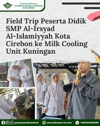

SMP Al-Irsyad Al-Islamiyyah Kota Cirebon berada di Jl. Panjunan No.27, Panjunan, Kec. Lemahwungkuk, Kota Cirebon, Jawa Barat 45112, Cirebon. Telah berdiri sejak 6 Desember 1982. Memiliki jargoan "Cerdas, Mulia, Berprestasi" dan "We are the Leader, We are the winner". SMP Al-Irsyad mempunyai pilihan kelas yaitu Kelas Reguler dan Kelas Unggulan. Perbedaan dari kedua kelas itu dapat dilihat dari Target Juz saat lulus nanti. Kelas Reguler mempunyai Target 3 Juz dan Kelas Unggulan 5 Juz. Untuk informasi kami sedang membuka PPDB gelombang kedua untuk tahun ajaran 2025/2026 pada tanggal 6 Januari 2025 hingga kuota penuh.
Murojaah pagi menjadi kebiasaan pagi yang dilakukan para siswa/i SMP Al-Irsyad. Tempat Murojaah dibagi 3 tempat yaitu Lapangan, Aula dan Koridor. Di Lapangan untuk siswa/i yang mengaji tahap jilid, Qur'an Juz 27 dan Qur'an Juz 1, sedangkan di Aula untuk tahap Tahfiz dan di Koridor tahap Tajwid Ghorib.
Program ini hanya dilakukan siswa/i kelas 8 dan dijalankan selama sebulan di Pare, Kediri. Yayasan Al-Irsyad sudah bekerjasama dengan FEE Center sebagai tempat belajar bahasa inggris. Transportasi yang digunakan adalah Bus via Toll.
Setiap semester Field Trip rajin dilaksanakan dan biasanya bertema sesuai P5 yang sedang berlangsung. Field Trip dilakukan di dalam kota saja, jika di luar kota hanya di Kuningan. Biasanya mendatangi UMKM yang sesuai dengan tema yang ditentukan.
Hanya siswa/i kelas 9 yang melaksanakan Program ini. Biasanya dilakukan di Kuningan dan hanya sehari, bisa dibilang PP atau Pulang-Pergi. Disana para siswa/i melakukan acara berbagi sembako kepada warga, membersihkan Masjid dan mengunjungi UMKM setempat.
Kami sedang membuka PPDB Tahun Ajaran 2025/2026 Gelombang 2 yang telah dibuka paada tanggal 6 Januari 2025 sampai kuota terpenuhi. Untuk info yang lebih jelas, dapat hubungi kami lewat sosial media :
Instagram